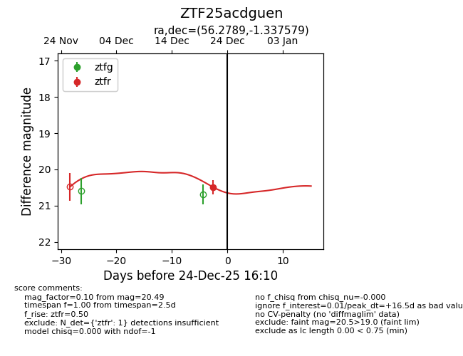
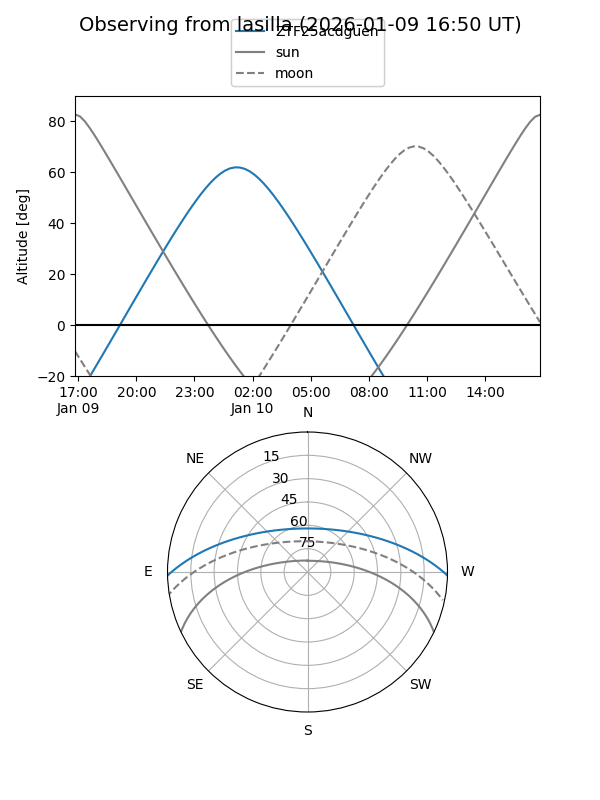
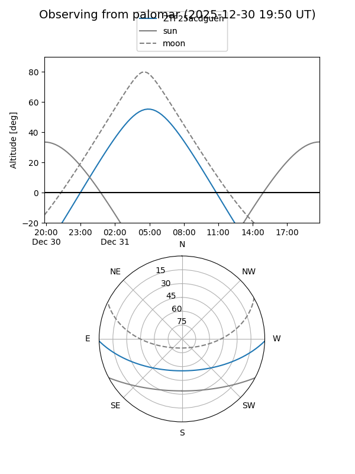

ZTF25acdguen
Target ZTF25acdguen at 2025-12-31 17:00
Aliases and brokers:
FINK:
Lasair:
ALeRCE:
alt names
ZTF25acdguen (ztf,fink_ztf)
Coordinates:
equatorial (ra, dec) = 56.2789,-1.33758
equatorial (HMS+DMS) = 03:45:06.93,-01:20:15.28
galactic (l, b) = (188.6266,-41.06417)
Flags:
Photometry:
last ztfr=20.49
1 ztfr detections
Lightcurve

Visibility


Additional plots